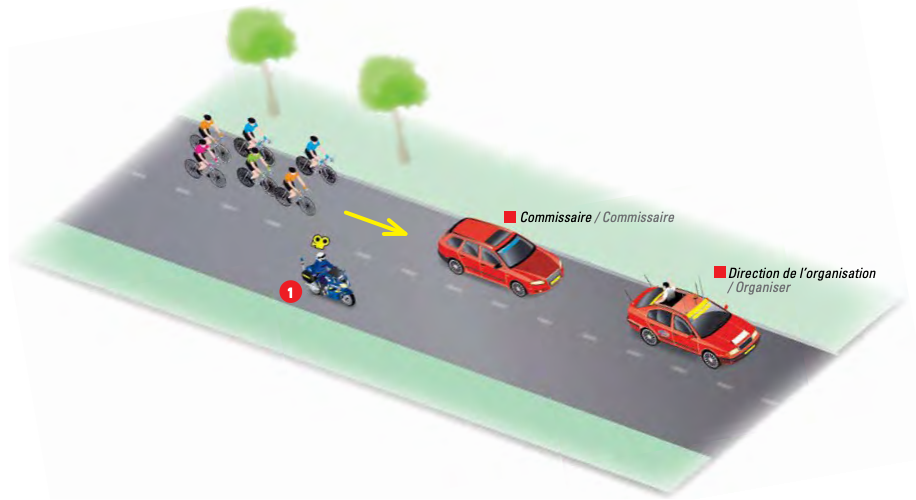
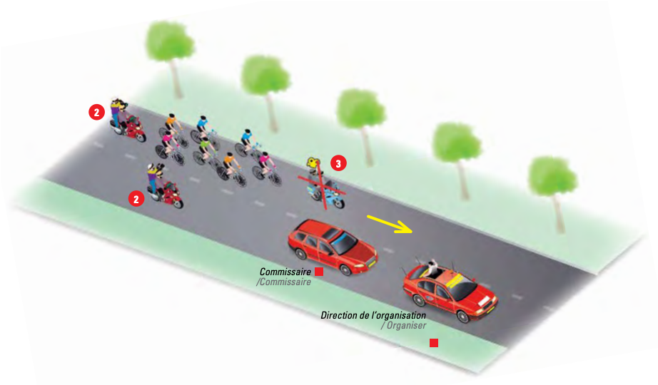

22 Motos-Caméras
La médiatisation de son épreuve est particulièrement importante pour l’organisateur. Elle lui permet d’assurer, en amont, la promotion de son épreuve ; elle permet au public de suivre la course en direct.
Elle peut aussi constituer, pour les partenaires de l’événement, la garantie d’une visibilité de leur marque ou de leur territoire auprès d’un large public et, par conséquent, conditionner le modèle économique et la pérennité de l’événement.
Il doit aussi, de plus en plus, créer lui-même du contenu et le diffuser sur internet et sur les médias sociaux.
Le cyclisme est un sport d’équipe… filmé par des équipes techniques qui doivent être soudées et structurées. Sur un terrain aussi compliqué que la route, leur expérience est capitale pour la réussite de la production TV.
Références complètes :
Communications et respect des directives
Pour la sécurité de tous et le bon déroulement sportif de l’épreuve, le pilote de la moto-caméra et son caméraman doivent être en tout temps à l’écoute de la fréquence Radio-Tour sur le radio fourni par l’organisation. Ces derniers doivent se soumettre immédiatement à toute demande en provenance de la direction course.
Le caméraman et le pilote peuvent être sanctionnés s’ils contreviennent à un règlement ou à une directive lors d’une épreuve (mise hors course, amende, etc.).
Position des motos-caméras durant la course
Peloton groupé
Quand un peloton roule à allure modérée, il n’y a qu’un seul caméraman en tête du peloton. Les caméramen doivent veiller à ne pas géner les coureurs ou la circulation des autres véhicules (1).

Peloton roulant à allure rapide
Les caméramen filment de l’arrière ou de profil (2).
Le caméraman ne peut se positionner devant un groupe roulant à une allure rapide (3). Cette position pourrait gêner ou favoriser les coureurs selon la situation de course.
